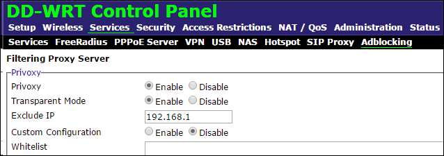
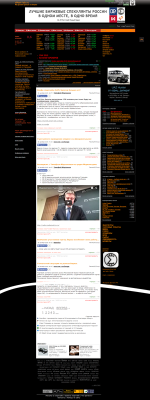
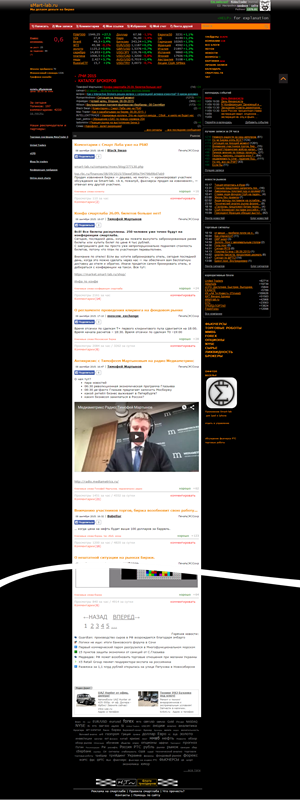

Для многих (о чем я сегодня расскажу) это не является чем-то новым, но для меня является, и решил поделиться с остальными, потому что реальной информации я нигде не нашел.
Итак, у вас имеется WiFi роутер. Вы заменили его стандартную прошивку (программу управления) на альтернативную DD-WRT.
В настройках Services –> Adblocking можно легко настроить блокировку на стадии получения трафика любым устройством (пока не проверил, блокирует рекламу на планшете и телефоне в играх и программах… надо проверить)

ip адрес ставим нашего роутера.
В белый список можно добавить сайты, что бы блокировка рекламы не работала.
И так какой результат. Вот как выглядит сайт БЕЗ блокировки рекламы и с блокировкой:

Видно что внизу осталась реклама Яндекс Директа.
Но как показала практика, плагины для блокировки рекламы (например AdBlock Premium) убирают и эти рекламные блоки.
Какой важный плюс блокировки на уровне роутера? Например я заметил, что AdBlock не блокирует рекламу на многих сайтах с видео, когда реклама начинает показываться до видео эфира. Например меня реально бесит смотреть эфир первого канала. Так как это эфир, и в нем итак есть реклама, я жду почти минуту, просматривая минимум два ролика рекламы.
Теперь этих роликов я не вижу, и … радость! :)